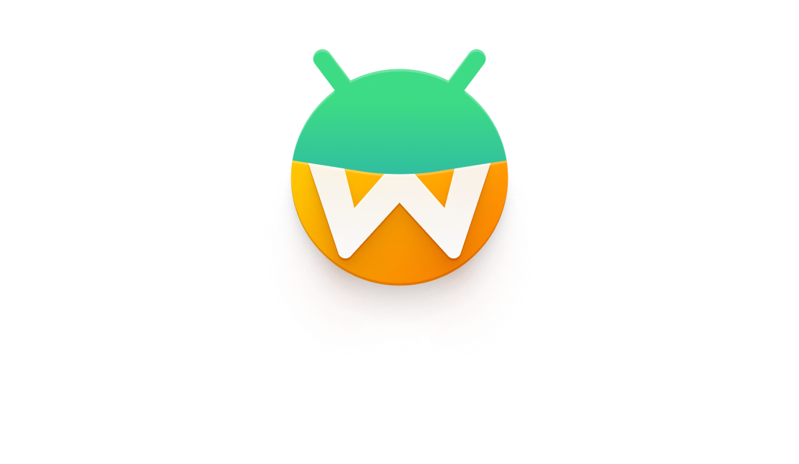

Legal
Waydroid is dual-licensed, on the same terms as Bliss OS. You can use it under GPL version 3, or under a commercial license from Navotpala Tech (Bliss Co-Labs Inc.). This page explains which license applies to you.
Most of the confusion is about public downloads. A file from this website is not automatically a license to put Waydroid in a product.
Download the public builds and run Android apps on your own Linux system. Builds that include Google Play are a convenience for personal use. They are not permission for a company to ship them.
You may use the public Vanilla image at no cost when the product needs nothing beyond that image and you do not keep changes private. If you change the open-source code, share those changes or publish the source yourself.
Those cannot be licensed for Waydroid. Google licenses the Play Store (GMS) only for a single device SKU whose components will not change. Widevine has the same restriction. Generic systems such as Waydroid, Bliss OS, and Bass OS are not eligible. A commercial license from us does not add them. If your apps need GMS features, we offer MicroG-based builds instead. MicroG supports the majority of those features. The majority of Android Enterprise features are supported too, but some are not. MicroG is not a Google license.
Waydroid can be used under a few different licenses, depending on what you are doing.
Use this when you can follow GPL version 3. You may use and change Waydroid if you share your changes under that same license.
GPL version 3 covers Waydroid applications and products that stay open source.
Use this when you are building proprietary or commercial software and you do not want to share source code with third parties, or you otherwise cannot follow GPL version 3.
Commercial licenses come from Navotpala Tech (Bliss Co-Labs Inc.). They also offer Waydroid_NT, a commercial Waydroid client rewritten in C++ for speed and stability.
Available for students and educators at qualified schools and universities. Ask us if this fits your institution.
Google Play (GMS) and Widevine are not available for generic platforms. Google licenses GMS only for a single SKU: a device whose components will not change. Widevine is under the same restriction. Waydroid, Bliss OS, Bass OS, and similar projects are not eligible. A commercial Waydroid license cannot add them, and a public image that includes them is only for personal use. Downloading a public image is not compliance. If your apps need GMS features, we offer MicroG-based builds. MicroG supports the majority of GMS features. The majority of Android Enterprise features are supported too, but some are not. MicroG is not a Google license.
Open-source Native Bridge on Android 16 and newer can be shipped. Waydroid-based builds from Android 16 onward include some open-source Native Bridge options. Those options may be included in a commercial build. A proprietary Native Bridge in an older public image is not a license to ship that proprietary code.
Any change to the Waydroid source or to compiled images has to follow the license. That includes repackaging, distributing a changed image, or removing included system components. If you cannot follow GNU GPL version 3, you need a commercial license from Navotpala Tech (Bliss Co-Labs Inc.).
Under the open-source license, some specific parts of Waydroid are available under the GPL. For commercial licensees, Waydroid-related changes are available under the commercial Waydroid license.
Waydroid documentation is available under commercial licenses from Navotpala Tech (Bliss Co-Labs Inc.), and under the GNU Free Documentation License (FDL) version 1.3, as published by the Free Software Foundation.
To buy a commercial Waydroid license, email us with the product and whether your changes will stay private. That license covers Waydroid. It cannot include Google Play (GMS) or Widevine, because those are not licensed for generic platforms. If your apps need GMS features, ask about a MicroG-based build. MicroG supports the majority of those features. The majority of Android Enterprise features are supported too, but some are not. Android 16 and newer commercial builds can include the open-source Native Bridge options. If you want the commercial client, ask about Waydroid_NT.
Request pricingWaydroid also contains third-party code under the open-source licenses chosen by the original authors.
Waydroid inherits the Apache License 2.0 that AOSP uses for most components. Many other components, including Android-Generic Project, use GPL 2.0. For product use, we do not include Google Play (GMS) or Widevine. Those are not licensable on a generic system, and a public image that includes them is for individuals only. Android 16 and newer Waydroid-based builds do include some open-source Native Bridge options, and those can be part of a commercial build. Some toolkits, including the Bliss-BASS rebranding toolkit, need a separate license.
If you represent a company, start here. Google Play (GMS) and Widevine cannot be licensed for Waydroid, Bliss OS, Bass OS, or any other generic platform. Google only offers GMS for a single device SKU whose components will not change, and Widevine follows the same rule. Public images that include them are for individuals only. When apps need GMS features, we offer MicroG-based builds. MicroG supports the majority of those features. The majority of Android Enterprise features are supported too, but some are not. Open-source Native Bridge options in Android 16 and newer Waydroid builds can be included in a commercial product.
Not the public Google Play images
Not if you are using a public Google Play or Widevine image. Those components are not licensed for a generic product at all. Putting those images on devices, kiosks, signage, appliances, or customer hardware is not allowed, even if you leave the image unchanged and even if you only use it inside your own company. Buying a Waydroid license does not change that.
What a company may use without a paid Waydroid license is the public Vanilla image. It has no Google Apps or Widevine. It is basic. If your product needs nothing beyond that public open-source image and you make no closed-source changes, you may use it at no cost. Android 16 and newer builds may also include the open-source Native Bridge options.
Closed-source changes need a commercial license before you ship. Contact us for a Waydroid license. We cannot sell or arrange a Google Play (GMS) or Widevine license for this project. If your apps need GMS features, ask about a MicroG-based build. MicroG supports the majority of those features. The majority of Android Enterprise features are supported too, but some are not.
No
No. Google licenses the Play Store and Play Services (GMS) only for a single device SKU whose components will not change. Widevine has the same restriction. Waydroid, Bliss OS, and Bass OS are generic platforms, so they are not eligible. A public image, a commercial Waydroid license, and a development contract do not create a GMS or Widevine license.
Shipping a public image that includes them is still not allowed, including:
If the apps you need depend on GMS, we offer MicroG-based builds instead of Google Play. MicroG supports the majority of GMS features. The majority of Android Enterprise features are supported too, but some are not. MicroG is not a Google license.
Native Bridge is handled separately. A proprietary Native Bridge in an older public image is not yours to ship. Android 16 and newer Waydroid-based builds include open-source Native Bridge options, and those can be included in a commercial build.
The public Vanilla build is the company-safe image. Finding an older public Google Play image on a mirror does not change the GMS rule. Those builds were published for individuals.
Yes, for personal use
Yes. Public releases are meant for personal use, running Android applications on a normal GNU/Linux system. Google Play and other proprietary options are for personal use only.
Not a product license
Yes. Google Play releases include proprietary software and are for individuals only. Vanilla builds can still include some proprietary parts, typically media codecs. None of that is permission to ship those parts in a commercial product.
Proprietary pieces in public Waydroid builds:
Google Play builds also include Google Play Services and the Google Play Store, for personal use. A company cannot obtain a GMS or Widevine license for Waydroid, Bliss OS, or Bass OS, because those projects are generic platforms. Copying a public image does not create that license either.
Yes, with conditions
Yes, for the open-source trees. This does not cover Google Play or Widevine in some public images. Those cannot be licensed for a generic system. Open-source Native Bridge options from Android 16 and newer Waydroid builds are open source and may be included in a commercial build.
If you are a developer, a startup, or a company, the open-source licenses allow you to use the source at no cost as long as you: A) use it as-is, B) contribute your changes back, or C) publish the full source yourself. As-is means the open-source code. A Google Play image in a product is covered in the company section above.
If you want to change our source and keep those changes private, contact us for a per-device license or a development contract. That covers branding, optimizations, and other work you do not plan to release as open source.
Depends on the repository
It depends on where you made the changes. Repositories in the project use different open-source licenses, and each one has its own rules. If you are not sure whether a change must be released, contact us. Private changes plus a public Google Play image is still not a valid commercial setup.
Some tools also require the finished product, or your changes to it, to be released. Some Apache 2.0 projects allow that extra requirement, and some versions of Android-Generic Project do too. A toolkit can help you find those licenses in the source tree.
Navotpala Tech (Bliss Co-Labs Inc.) is the commercial sponsor for this licensing model. They issue commercial licenses when a public Vanilla image is not enough. That license still cannot include Google Play (GMS) or Widevine. Apps that need GMS features can use a MicroG-based build. MicroG supports the majority of those features. The majority of Android Enterprise features are supported too, but some are not.
Ship the public Vanilla image unchanged, or share the source for every change you make. No fee for the Waydroid license when you can follow the open-source terms. Android 16 and newer builds may include the open-source Native Bridge options.
Navotpala Tech (Bliss Co-Labs Inc.) offers Waydroid_NT, a commercial Waydroid client rewritten in C++ for speed and stability. It is separate from the open-source client on this site.
Branding, optimizations, or features you will not release as open source need a per-device license or a development contract.
The Bliss-BASS rebranding toolkit can require its own license on top of the Waydroid license.
We offer licenses for organizations of different sizes. If you are not sure which license you need, email us and describe the product. We can help you sort out the right one.